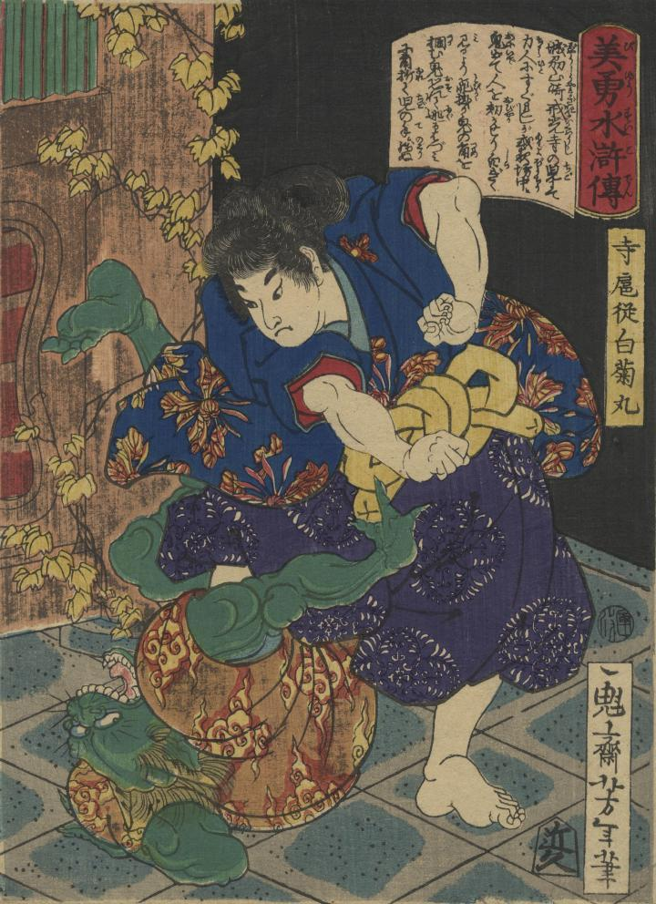

寺扈従白菊丸が、鬼を倒している。
著作者：一魁芳年／出典：親書誌：U426_nichibunken_0362：美勇水滸伝 寺扈従白菊丸；ビユウ スイコデン テラ コショウ シラギクマル／日付：2014／資源識別子：U426_nichibunken_0362_0001_0000
Copyright (c)2010- International Research Center for Japanese Studies, Kyoto, Japan. All rights reserved.